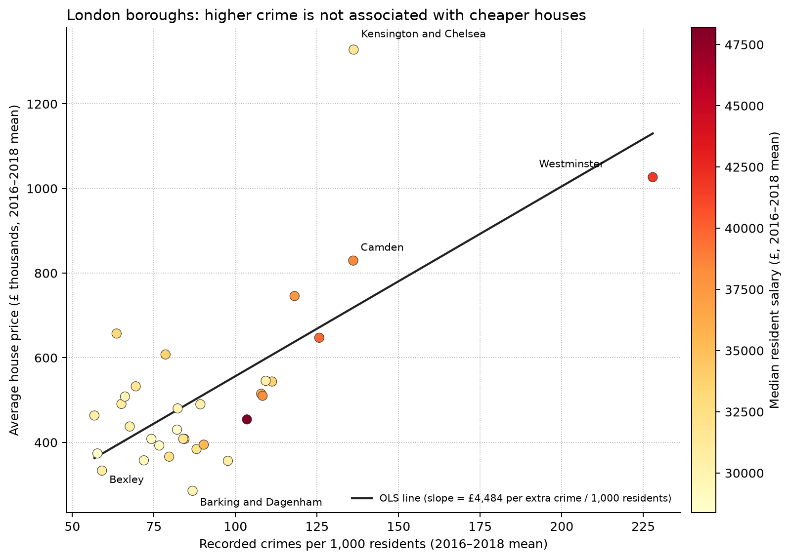

FAN ZIQIAN · CISC7204 Class A · Team 05
Do London boroughs with more crime have cheaper houses?
+0.47Spearman ρ, n = 32
No. Across the 2016–2018 means of 32 boroughs, crimes per 1,000 residents move with average prices, not against them. The ordinary claim would have required a negative rank correlation. This one is positive.

How the number was made
Two public tables are joined. The monthly Housing in London file supplies price and the crime total. The yearly file supplies population and median earnings. A borough-year is kept when crime is recorded for at least 10 months. The rate is crimes divided by population, times 1,000. The City of London is left out. The plotted points are means over 2016, 2017, and 2018.
Median earnings also move with prices (ρ = 0.51) and with the crime rate (ρ = 0.59). The raw crime count, without the population adjustment, only reaches ρ = 0.25. The pattern looks more like “central, higher-earning boroughs have both higher prices and more recorded offences” than like “crime makes housing cheaper.”
The correlation describes boroughs. It does not show that crime causes high prices, and it does not describe a street or a household.
- Project repository — notebook, the two source tables, the 32-borough summary, and this figure.
- Housing in London on Kaggle, the working files.
- GLA average house prices, the Land Registry series used as the price authority.
What this project changed in how I work
Through this data science project, I went through the complete workflow—from data understanding and data cleaning to exploratory data analysis (EDA), visualization, and modeling for prediction—which gave me a deeper understanding of "data-driven decision making." My biggest takeaway wasn't building a complex model, but rather learning to work backward from the business question to define the analysis path—figuring out what I want to answer before deciding which data to look at and which charts to make, instead of jumping straight to methods. During data cleaning, I realized that handling messy data is often more time-consuming than the analysis itself, and it tests patience and attention to detail even more. In the EDA stage, I learned to uncover patterns and anomalies through distributions, correlations, and group comparisons—many conclusions actually became clear in the process of plotting. Visualization taught me that a good chart can persuade people far better than a complicated description. Modeling for prediction showed me that a model is just one of the tools for answering questions, and it only works when data quality and problem definition are clear enough. I also recognized my shortcomings: I lack patience with messy data, I tend to draw conclusions by intuition without statistical validation, and my visualizations aren't concise enough. Going forward, I will strengthen my foundation in statistics and business understanding so that my analysis is better grounded, and avoid the trap of "just running tools without thinking about the problem." This project taught me that an excellent data scientist must understand both methods and the problem itself, and be able to communicate conclusions clearly.
The prediction comparison sits in a separate repository, Predicting Smartphone Addiction. Screen time alone reaches about 0.890 ROC-AUC, and a later stack reaches 0.970 on out-of-fold predictions. A public-leaderboard gap of 0.00006 is too small to choose the final model.